Shaluli Shan fieldwork 2009
Haizi Shan fieldwork 2008
Bayan Har fieldwork 2007 --- MMS photos from the 2007 fieldwork
Bayan Har fieldwork 2006
Photos from the Bayan Har fieldwork August-September 2007
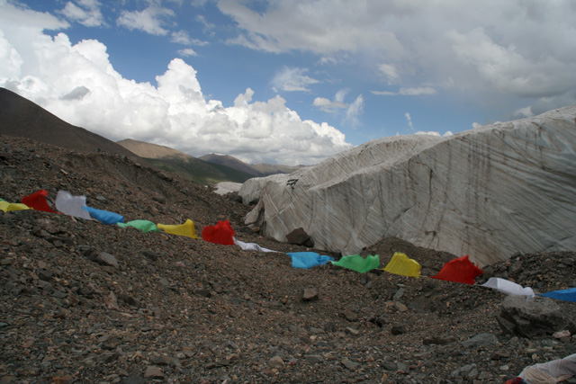
Weigele Dangxiong glacier margin at Anyemaqen icefield
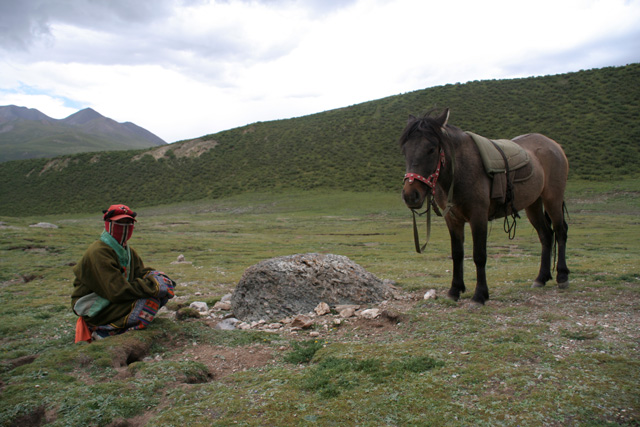
A Tibetan girl and her horse at an erratic boulder northeast of Anyemaqen icefield

Measuring fabric at the km-stone 439 section
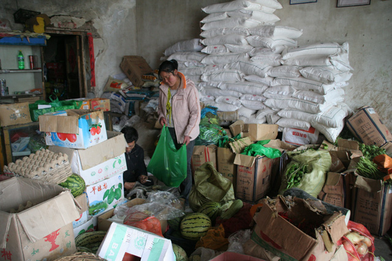
Provisioning in Maduo for a camping period in western Bayan Har
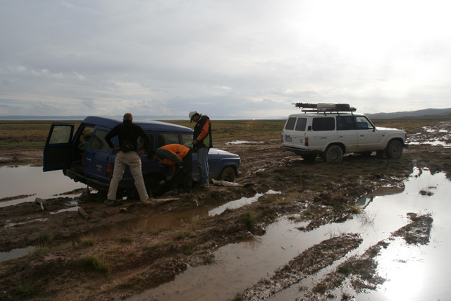
Stuck in mud northeast of Zhaling Hu
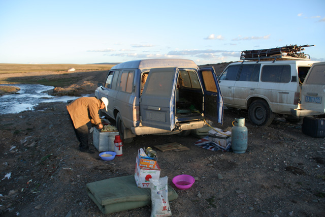
Duan Shifu cooking in western Bayan Har
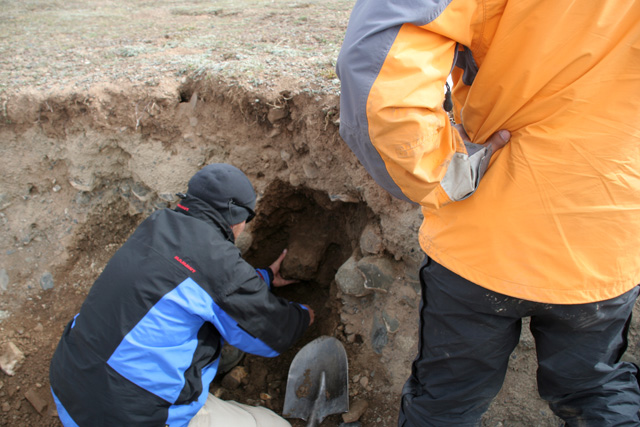
Collecting till from an end moraine in Chalaping valley for OSL analysis
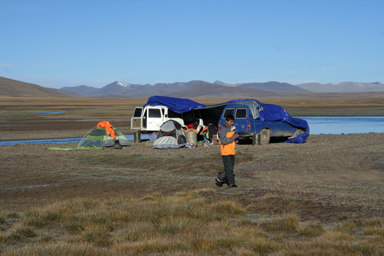
A nice morning in the (glacial) Chalaping valley
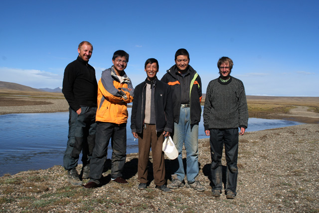
Daniel Veres, Liu Feng, Duan Shifu, He Shifu and Jakob Heyman - the Bayan Har fieldwork 2007 group
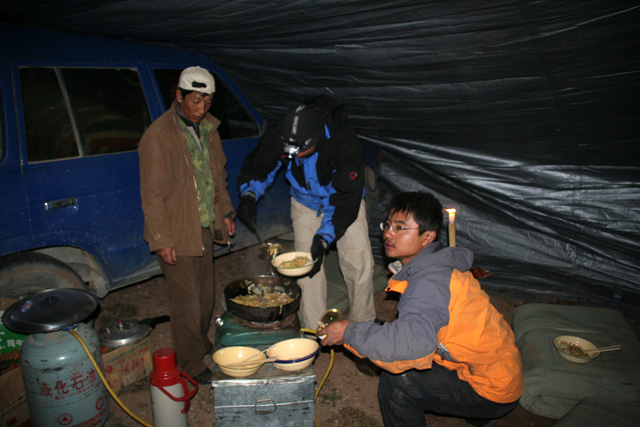
Noodles for dinner...
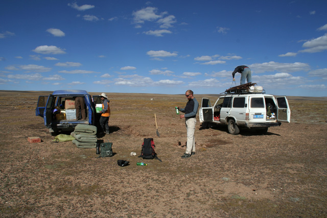
Camping down in the Chalaping valley
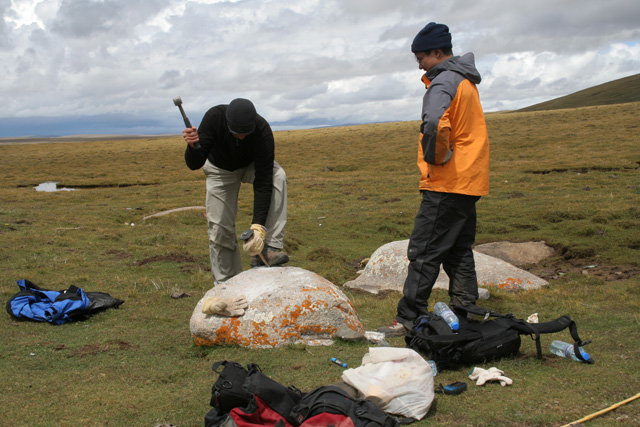
Daniel and Feng efficiently sampling a granite boulder in central Bayan Har for cosmogenic dating
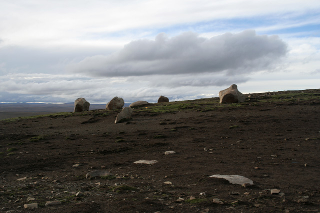
Erratic granite boulders just north of central Bayan Har
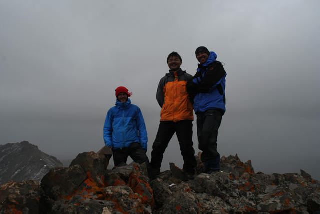
Jakob, Feng and Daniel on top of central Bayan Har, >5200 m a.s.l. (a 17 h trip in continuous snowfall)
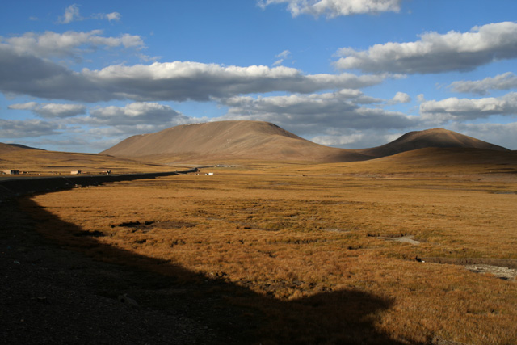
Central Bayan Har in the evening